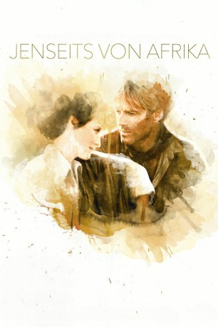

#111 Jenseits von Afrika
Alternativ: Out of Africa
Auszeichnungen: 7 Oscars gewonnen für 4 Oscars nominiert 3 GoldenGlobes gewonnen 3 BAFTA-Awards gewonnen
 
 IMDB-Wertung: 7.2 / 10
IMDB-Wertung: 7.2 / 10  Metascore: 0
Metascore: 0 
Kurz vor Ausbruch des Ersten Weltkriegs entflieht die dänische Baronin Karen Blixen der Vernunftehe mit einem verarmten schwedischen Vetter und geht nach Afrika, wo sie in Kenia am Fuß der Ngongberge eine Farm aufbaut. Sie begegnet dem wie sie afrikasüchtigen englischen Flieger und Abenteurer Denys Finch-Hatton und erlebt eine Zeit romantischen Glücks. Ihre Farm brennt ab, sie steht vor dem Bankrott. Auf dem Weg zur Geliebten stürzt Finch-Hatton ab. Sie begräbt ihn nahe der Farm. Zwei Löwen wählen sein Grab als Ruheort.
Jahr: 1985
Dauer: 161 Minuten
FSK: 12
Land: USA Studio: UniversalTonspuren: DTS - ,
Untertitel: Deutsch,
Auflösung: 1080p (1920×1040) Größe: 11980 MB
Genre: Biographie, Drama, Liebe
Regisseur:  Sydney Pollack
Sydney Pollack
Drehbuch: Karen Blixen, Judith Thurman, Errol Trzebinski, Kurt Luedtke
Soundtrack: John Barry
Darsteller:
 Meryl Streep als Karen
Meryl Streep als Karen Robert Redford als Denys
Robert Redford als Denys Klaus Maria Brandauer als Bror
Klaus Maria Brandauer als Bror Michael Kitchen als Berkeley
Michael Kitchen als Berkeley Malick Bowens als Farah
Malick Bowens als Farah Michael Gough als Delamere
Michael Gough als Delamere- Rachel Kempson als Lady Belfield
- Graham Crowden als Lord Belfield
 Leslie Phillips als Sir Joseph
Leslie Phillips als Sir Joseph Shane Rimmer als Belknap
Shane Rimmer als Belknap- Donal McCann als Doctor
- Iman als Mariammo
- Joseph Thiaka als Kamante
- Stephen Kinyanjui als Kinanjui
- Suzanna Hamilton als Felicity
- Mike Bugara als Juma
- Job Seda als Kanuthia
- Mohammed Umar als Ismail
- Kenneth Mason als Banker
- Tristram Jellinek als First Commissioner
- Stephen B. Grimes als Second Commissioner
- Annabel Maule als Lady Byrne
- Benny Young als Minister
- Sbish Trzebinski als Beefy Drunk
- Allaudin Qureshi als Rajiv
- Niven Boyd als Young Officer
- Peter Strong als Huge Man
- Abdulla Sunado als Esa
- Amanda Parkin als Victoria
- Muriel Gross als Lady Delamere
- Ann Palmer als Dowager
- Keith Pearson als Missionary Teacher
Datei: X:\1985\Jenseits von Afrika (1985, FSK12, 1920x1040).mkv seit 03.02.2015
Festplatte: HD 1980-1986
 Es gibt insgesamt 43 Filme in der Gruppe '1985'
Es gibt insgesamt 43 Filme in der Gruppe '1985'